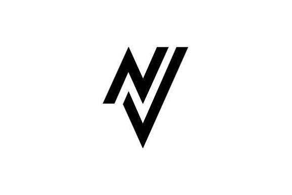

Welcome to Nichonometry!
Nichonometry is a smart calculator hub. It solves specific problems across various topics. Just like a standard math tool gives instant results, Nichonometry gives exact, custom answers for any niche topic.

Nichonometry is a smart calculator hub. It solves specific problems across various topics. Just like a standard math tool gives instant results, Nichonometry gives exact, custom answers for any niche topic.